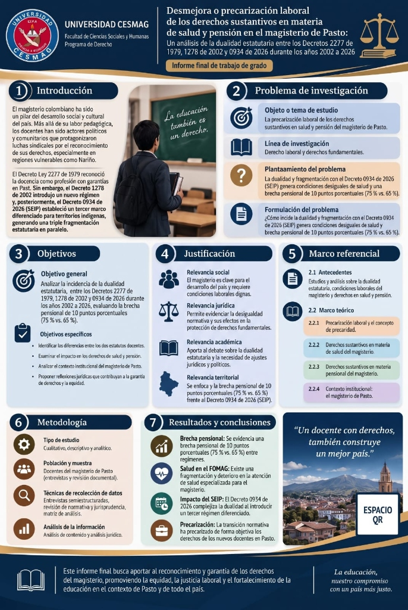

UNIVERSIDAD CESMAG · Facultad de Ciencias Jurídicas y Políticas · Programa de Derecho
Grupo DIDS (Derecho, Innovación y Desarrollo Social)San Juan de Pasto, Nariño
Trabajo de Grado · Sustentación Sociojurídica
Desmejora y Precarización Laboral en el Magisterio Oficial
Análisis crítico de la dualidad estatutaria entre los Decretos 2277 de 1979 y 1278 de 2002, y la fragmentación con el Decreto 0934 de 2026 (SEIP) en materia de salud y régimen pensional (Pasto, Nariño 2002–2026).
Igualdad Material (Art. 13 C.P.)Principio de No Regresividad (Art. 48 C.P.)Fondo Nacional del Magisterio (FOMAG)Precariado (Guy Standing)Educación Indígena Propia
Investigador Sustentante
Sebastián Muñoz Martínez
Estudiante del Programa de Derecho
Facultad de Ciencias Jurídicas y Políticas
Universidad CESMAG · San Juan de Pasto Directora: Mg. MARIA ALICIA ORDONEZ HERRERA
Trabajo de Grado para Título de Abogado
Portal Académico de Divulgación Jurídica
Sustentación del Trabajo de Grado
Este espacio interactivo presenta los hallazgos, fundamentos teóricos y análisis jurisprudencial de la investigación adelantada en el Programa de Derecho de la Universidad CESMAG sobre la crisis prestacional y estatutaria del magisterio en Pasto y Nariño durante el período 2002–2026.

Informe Final de Trabajo de Grado · Universidad CESMAG
Haz clic para zoom interactivo
Divulgación Científica de la Investigación
Póster Académico: Desmejora o Precarización Laboral del Magisterio de Pasto
Síntesis oficial del informe final de trabajo de grado presentada en la Facultad de Ciencias Jurídicas y Políticas de la Universidad CESMAG. Este póster condensa la evidencia dogmática y de campo en 7 ejes temáticos:
1
Introducción: El magisterio como pilar social y la fragmentación normativa (D. 2277/79 vs. 1278/02).
2
Problema de Investigación: Precarización en salud y pensión en Pasto frente a la brecha del 75% vs. 65%.
3
Objetivos: Analizar la dualidad estatutaria y formular garantías de equidad para los educadores.
4
Justificación Cuádruple: Relevancia social, jurídica, académica y territorial nariñense con el D. 0934/26.
5
Marco Referencial: Antecedentes, teoría del precariado de Guy Standing y derechos del magisterio.
6
Metodología Mixta: Triangulación convergente con 65 encuestas digitales y 10 entrevistas a profundidad.
7
Resultados & Conclusiones: Brecha pensional de 10 puntos, crisis en FOMAG y regresividad objetiva demostrada.
El Decreto 2277 garantiza pensión a los 55 años con el 75% del último sueldo devengado y compatibilidad con salario activo. El Decreto 1278 impone 1.300 semanas, 57/62 años de edad, 65% sobre promedio de 10 años e incompatibilidad absoluta.
Fallas críticas en la prestación de servicios a través de Fiduprevisora. La disfonía docente, patologías osteomusculares y el síndrome de agotamiento (burnout) carecen de rutas de calificación oportuna para los nuevos educadores.
En Nariño convergen docentes 2277, 1278 y dinamizadores comunitarios del Sistema Educativo Indígena Propio (SEIP), poniendo a prueba la prohibición de regresividad laboral frente a la autonomía étnica.
Examen detallado de los Decretos 2277 de 1979, 1278 de 2002 y 0934 de 2026. Análisis de su origen, ingreso a la carrera, régimen pensional, salud y juicio de vulneración constitucional.
Pacto Histórico · 1979Estatuto Docente
Decreto Ley 2277 de 1979
Régimen Garantista y Estabilidad Reforzada
Fruto de décadas de marchas y huelgas encabezadas por FECODE. Concibe la labor docente como una profesión con desgaste diferencial y vocación social.
Perfil Base: Normalista Superior y Licenciados en Pedagogía.
Ingreso/Ascenso: Escalafón de grados 1 al 14. Ascenso automático por acumulación de tiempo de servicio, créditos académicos y títulos.
Pensión:55 años de edad (mujeres y hombres) y 20 años de servicio.
Monto Pensional:75% del último salario devengado (incorporando factores salariales específicos).
Compatibilidad:Plena compatibilidad de pensión de jubilación con salario docente activo hasta el retiro forzoso (70 años).
Salud: Cobertura especial Ley 91/89 en el FOMAG con reconocimiento de disfonía y riesgos de voz.
Tope Salarial: En categorías altas con doctorado y antigüedad, su asignación salarial y pensión protegida garantizan un retiro de alta dignidad.
Ajuste Fiscal · 2002Profesionalización
Decreto Ley 1278 de 2002
Flexibilización y Concurso Abierto
Expedido bajo las facultades extraordinarias de la Ley 715 de 2001 para contención del gasto. Abre la docencia a profesionales no licenciados.
Perfil Base: Normalistas, Licenciados y Profesionales no pedagogos.
Ingreso/Ascenso: Concurso de méritos obligatorio. Escalafón de 3 Grados y 4 Niveles (A-D). Ascenso condicionado a evaluación de competencias, dependiente de cupos fiscales y períodos electorales.
Pensión: Ley 100 de 1993: 57 años mujeres / 62 años hombres y 1.300 semanas (26 años).
Monto Pensional:65% del promedio de los últimos 10 años (IBL). Pérdida masiva de poder adquisitivo.
Compatibilidad:Incompatibilidad absoluta entre salario activo y pensión. Obligación de retiro definitivo.
Salud: Mismo FOMAG pero bajo reglas generales y desarticulación de riesgos de medicina del trabajo.
Barrera de Ascenso: Concursos convocados con demoras de años, generando congelamiento salarial prolongado en los niveles A y B.
Régimen Étnico · 2026SEIP Indígena
Decreto 0934 de 2026
Dinamizadores y Autonomía de Cabildos
Reglamenta el Régimen Especial de Dinamizadores del Sistema Educativo Indígena Propio (SEIP), derivado del Decreto Ley 0481 de 2025.
Perfil Base: Dinamizadores pedagógicos, guías espirituales, sabedores y líderes comunitarios de pueblos ancestrales.
Ingreso/Selección: Aval de las autoridades tradicionales indígenas (cabildos y resguardos), atendiendo a lengua y cosmovisión.
Estabilidad y Vivienda: La norma estipula la prohibición expresa de desmejorar condiciones laborales o de vivienda.
Régimen Prestacional: Tensión entre la cosmovisión comunitaria y los derechos de seguridad social integral (FOMAG / Pensiones).
Contexto en Nariño: Resguardos de pueblos Pastos, Awá y Quillasingas, donde coexisten con docentes ordinarios.
Tensión Sociojurídica: La legítima protección de la identidad étnica frente al riesgo de desprotección prestacional frente a los estatutos 2277 y 1278.
Matriz Analítica de Derechos Sustantivos
Tabla Comparativa Multidimensional
Contraste variable por variable para la sustentación jurídica.
👉En dispositivos móviles, desliza horizontalmente la tabla para ver todos los decretos.
Criterio Jurídico
Decreto Ley 2277 de 1979
Decreto Ley 1278 de 2002
Decreto 0934 de 2026 (SEIP)
1. Naturaleza Jurídica
Régimen laboral y objeto
Estatuto Docente tradicional para educadores oficiales al servicio del Estado.
Estatuto de Profesionalización docente basado en mérito y eficiencia fiscal.
Régimen Especial de Dinamizadores Pedagógicos del Sistema Indígena Propio.
2. Requisitos de Ingreso
Títulos y mecanismos
Formación pedagógica requerida: Normalistas Superiores y Licenciados en Educación.
Vocación Pedagógica
Concurso de méritos abierto a cualquier profesional universitario y licenciados.
Concurso Permanente
Valoración comunitaria, pertenencia étnica y aval del Cabildo / Autoridad Indígena.
Criterio Ancestral
3. Sistema de Ascenso
Escalafón y movilidad
14 grados. Ascenso por tiempo de servicio acreditado, cursos y títulos académicos sin cupos presupuestales restrictivos.
Ascenso Continuo
3 grados (I, II, III) con niveles A, B, C, D. Concurso de ascenso condicionado a examen y disponibilidad de caja fiscal.
Estancamiento en Escalafón
Estructura propia de dinamizadores pedagógicos concertada con la comunidad educativa indígena.
Depende del Cabildo
4. Régimen Pensional
Edad y semanas
55 años de edad (hombres y mujeres) con 20 años de servicio (~1.000 semanas).
Régimen Especial Favorable
Ley 100/93: 57 años mujeres / 62 años hombres y mínimo 1.300 semanas (26 años).
Retiro Postergado 7 Años
Régimen transitorio; se busca garantizar no regresividad frente a la seguridad social general.
Vacío / Transición
5. Liquidación Pensional
Tasa de reemplazo e IBL
75% del último salario devengado en el último año, incluyendo factores salariales.
Monto Digno y Predecible
65% del promedio de los últimos 10 años cotizados (IBL).
Pérdida >30% del Valor
Sujeto a normas de equivalencia salarial y respeto a condiciones salariales previas.
En reglamentación
6. Compatibilidad Salario
Pensión + empleo activo
Permitida plenamente: el docente puede cobrar su pensión y continuar laborando hasta los 70 años.
Doble Ingreso Legal
Prohibida taxativamente: al recibir pensión debe retirarse forzosamente del ejercicio docente.
Incompatibilidad Absoluta
En análisis de compatibilidad según el tipo de servicio comunitario y pedagógico.
Condición Comunitaria
7. Sistema de Salud
FOMAG y riesgos laborales
Afiliación al FOMAG con reconocimiento preferencial de enfermedades profesionales (voz, lumbalgias).
Protocolo Histórico
Cotiza al FOMAG pero es tratado administrativamente bajo las deficiencias y demoras de la red general.
Dificultad en Calificación
Articulación entre medicina tradicional indígena y cobertura general de salud del Estado.
Medicina Propia + EPS
8. Representación y Lucha
Organización sindical
FECODE como bastión histórico de conquista laboral y defensa del estatus profesional.
FECODE
FECODE lidera reclamos de unificación, pero existe fragmentación y división generacional interna.
División Gremial
Autoridades Indígenas (AICO, ONIC, CRIC) y Cabildos territoriales como voceros centrales.
Autoridades Étnicas
La investigación de grado concluye afirmativamente: la dualidad estatutaria vulnera de manera palmaria el Artículo 13 de la Constitución Política (Principio de Igualdad) y el Artículo 48 (Principio de No Regresividad en Derechos Sociales).
El legislador de 2002 utilizó una fecha arbitraria (el 26 de junio de 2003) para consagrar que dos servidores públicos que dictan las mismas clases en el mismo salón de San Juan de Pasto tengan regímenes de retiro con una diferencia de 7 años de vida y más de 1.5 millones de pesos mensuales en su pensión, sin que el Estado haya demostrado que tal medida mejoró en lo absoluto la calidad educativa de los estudiantes.
Núcleo Teórico de la Investigación de Grado
¿Por Qué se Precariza el Trabajo Docente?
Fundamentación teórica sobre cómo una reforma publicitaria de "meritocracia" encubrió un retroceso social, analizado a la luz del concepto de precariado de Guy Standing y la crisis del modelo de salud del FOMAG.
El Precariado Docente: Modelo de Guy Standing (2011)
En su obra "The Precariat: The New Dangerous Class", Standing demuestra que el precariado no se define por la ausencia total de empleo, sino por la pérdida sistemática de las siete seguridades laborales que garantizaban la ciudadanía económica:
1. Seguridad de Ingresos (Pensión Reducida)
En el Decreto 1278, el docente pierde la tasa del 75% sobre último salario y es arrojado al 65% del promedio de 10 años. Un docente que gana $6.000.000 se pensionará con cerca de $3.200.000 en el 1278, mientras su colega del 2277 recibirá $4.500.000.
2. Seguridad en el Trabajo (Salud Docente Desarticulada)
Las enfermedades profesionales docentes (disfonía crónica, várices, hernias lumbares por horas de pie, estrés crónico por grupos masivos) no son reconocidas de forma ágil por las redes de Fiduprevisora, obligando al docente a laborar enfermo.
3. Seguridad en el Puesto (Evaluación Sancionatoria)
La evaluación anual de desempeño del 1278 fue diseñada con un tinte punitivo. Dos evaluaciones reprobadas implican la destitución de la carrera, generando zozobra institucional y subordinación frente al rector.
4. Seguridad de Representación (Fragmentación Gremial)
La dualidad fracturó a los sindicatos docentes (FECODE y filiales regionales como SIMANA). Quienes están bajo el 2277 priorizan defender derechos adquiridos, mientras los del 1278 exigen ascensos congelados y descongelamiento salarial.
Coyuntura Crítica Nacional y Regional
La Crisis del Sistema de Salud del Magisterio (FOMAG - Fiduprevisora)
La salud de los maestros en Colombia atraviesa uno de sus momentos más oscuros. Históricamente, el modelo operado mediante intermediarios y contratos regionales por Fiduprevisora S.A. adoleció de corrupción y desatención. Sin embargo, la transición intempestiva de modelo de salud implementada durante el gobierno de Gustavo Petro (mayo de 2024 en adelante) generó un colapso generalizado:
Desabastecimiento Farmacéutico
Maestros con hipertensión, cáncer y afecciones vocales deben esperar meses o interponer tutelas para recibir medicamentos básicos por falta de redes dispensadoras formalizadas.
Citas con Especialistas Represadas
En Pasto y municipios de Nariño (Ipiales, Tumaco, Barbacoas), las citas con fonoaudiología, ortopedia y psicología ocupacional tardan hasta 6 meses en ser asignadas.
Bloqueo en Calificación Laboral
Los docentes del Decreto 1278 que padecen agotamiento crónico (burnout) o nódulos en cuerdas vocales sufren un laberinto burocrático que les niega el origen profesional de su enfermedad.
FECODE: Sindicato de Proceso y Lucha Histórica:
La Federación Colombiana de Trabajadores de la Educación (FECODE) ha sido el principal canal de resistencia gremial. Sin embargo, la brecha estatutaria generó tensiones internas entre las bases jóvenes del 1278 (que reclaman ascensos justos) y la dirigencia tradicional del 2277.
Documento Formal de Investigación Académica
Capítulos del Trabajo de Grado
Estructura completa de la investigación presentada ante el Centro de Investigaciones Sociojurídicas (CIS) y el jurado calificador de la Universidad CESMAG.
1.1 Objeto o Tema de Estudio
El objeto de estudio es la desmejora y precarización de los derechos sustantivos laborales en materia de salud y régimen pensional de los docentes oficiales del departamento de Nariño (con énfasis en la ciudad de Pasto), derivada de la coexistencia del Decreto Ley 2277 de 1979 y el Decreto Ley 1278 de 2002, así como la reciente incidencia del Decreto 0934 de 2026 (SEIP) durante el período 2002–2026.
1.2 Pregunta Problema
"¿De qué manera la coexistencia de los Decretos 2277 de 1979 y 1278 de 2002 ha generado una desmejora o precarización de los derechos sustantivos de los docentes oficiales de Pasto en materia de salud y régimen pensional durante el período 2002–2026?"
1.3 Objetivos
Objetivo General: Analizar la desmejora o precarización de los derechos sustantivos del magisterio oficial en materia de salud y pensión, derivada de la dualidad estatutaria durante 2002–2026.
Objetivo Específico 1: Identificar las principales vulneraciones en acceso a salud y calificación de enfermedades profesionales.
Objetivo Específico 2: Examinar las diferencias en el régimen pensional frente al principio de progresividad y no regresividad.
Objetivo Específico 3: Establecer los mecanismos jurídicos de exigibilidad y propuestas de reforma para la unificación estatutaria.
1.4 Justificación Cuádruple
Jurídica: Escrutinio estricto del Art. 13 (Igualdad) y Art. 48 (Progresividad C.P.). Social: El bienestar del maestro incide directamente en el derecho a la educación de los niños. Territorial: Nariño como departamento fronterizo con brechas rurales y urbanas acentuadas. Práctica: Generación de rutas judiciales efectivas (tutela y nulidad).
2.1 Antecedentes Internacionales
Revisión de la Recomendación N.° 195 de la OIT sobre Recursos Humanos y los informes de UNESCO (2023) sobre la crisis de bienestar y rotación docente en América Latina por reformas de corte neoliberal.
2.2 Antecedentes Jurisprudenciales Clave
Sentencia T-731 de 2007 (M.P. Humberto Sierra Porto): Hito donde la Corte Constitucional amparó a una docente del 1278, declarando que la fragmentación del régimen vulnera derechos fundamentales y aplicando el principio de progresividad.
Sentencia SU-245 de 2021: Sentencia de unificación sobre la inequidad estructural entre ambos regímenes pensionales y la obligación de interpretar a favor del trabajador docente.
Sentencia C-313 de 2003: Análisis del principio de igualdad en el régimen salarial.
Sentencia T-011 de 2026: Protección y situación jurídica de etnoeducadores e indígenas.
2.3 Marco Teórico: El Precariado y la Dualidad Laboral
Articulación de los postulados de Guy Standing (2011) y la teoría de mercados duales de Doeringer y Piore (1971), demostrando que el Estado creó un "segmento primario" (Decreto 2277) y un "segmento secundario precarizado" (Decreto 1278) dentro de la misma función pública docente.
3.1 Enfoque Sociojurídico
Supera el formalismo positivista para evaluar el impacto real y empírico de las normas sobre los maestros en Pasto.
3.2 Diseño: Triangulación Convergente
Recolección simultánea de datos cuantitativos (encuesta estructurada de 22 preguntas a docentes de Pasto) y cualitativos (10 entrevistas a profundidad con docentes de ambos decretos).
3.3 Ficha Técnica del Muestreo
Población de Pasto y Nariño: ~11.500 docentes oficiales (38% bajo D. 2277 y 62% bajo D. 1278).
Muestra Cuantitativa: 65 docentes activos y pensionados encuestados en instituciones urbanas de Pasto (INEM, CCP, Libertad, Santa Bárbara).
Muestra Cualitativa: 10 entrevistas semiestructuradas (5 del 2277 y 5 del 1278).
4.1 Hallazgos en Salud Ocupacional
El 84% de los docentes encuestados califica negativamente el servicio médico contratado por Fiduprevisora. En los docentes del 1278, el 91% manifiesta que nunca le han calificado una enfermedad vocal u osteomuscular como de origen laboral por trabas burocráticas extremas.
4.2 Hallazgos en Materia Pensional
La brecha económica promedio supera el 34% de pérdida de valor en la mesada pensional entre un docente del 2277 y uno del 1278 con posgrado idéntico, configurando un "empobrecimiento programado en la vejez".
4.3 Testimonios Cualitativos Significativos
"Trabajo codo a codo con mi compañero del 2277, él ya tiene 55 años y recibe su sueldo más su pensión gracia; yo tengo 58 años, no me puedo pensionar aún porque me faltan semanas y cuando me pensione deberé irme del colegio con un 65% que no me alcanzará ni para los remedios de la voz."
— Docente E-D1278-02, Pasto.
5.1 Conclusión Central
La dualidad estatutaria configuró una regresividad inconstitucional contraria al bloque de constitucionalidad. Lejos de elevar la calidad académica, institucionalizó la desmotivación y la fatiga laboral en el magisterio colombiano.
5.2 Vías de Exigibilidad Jurídica
Acción de Tutela: Como mecanismo transitorio ante perjuicio irremediable en salud y calificación de pérdida de capacidad laboral frente a Fiduprevisora y Juntas de Calificación.
Medio de Control de Nulidad Simple y por Inconstitucionalidad: Ante el Consejo de Estado frente a actos que desmejoran condiciones docentes en el SEIP y decretos reglamentarios regresivos.
Litigio Estratégico en Sede de Pensión: Aplicación del principio de favorabilidad pensional (Art. 53 C.P.) para liquidar factores salariales del magisterio.
5.3 Propuesta de Estatuto Único Docente
Unificación estatutaria concertada entre el MEN, FECODE y autoridades indígenas que consagre:
1) Jubilación con régimen de desgaste prematuro a los 55 años.
2) Tasa de reemplazo digna no inferior al 75%.
3) Carrera meritocrática con ascensos garantizados por producción pedagógica y formación de posgrado real.
Universidad CESMAG · Facultad de Ciencias Jurídicas y Políticas · Programa de Derecho
Informe Final de Trabajo de Grado
Texto académico íntegro de la monografía jurídica presentada por Sebastián Muñoz Martínez como requisito para optar al título de Abogado, bajo la dirección de la Mg. MARIA ALICIA ORDONEZ HERRERA. San Juan de Pasto, Nariño, 2026.
📖 Formato Monográfico Oficial · Criterios APA 7 · Investigación Sociojurídica Mixta
DESMEJORA O PRECARIZACIÓN LABORAL DE LOS DERECHOS SUSTANTIVOS LABORALES Y PRESTACIONALES EN MATERIA DE SALUD Y PENSIÓN EN EL MAGISTERIO DE NARIÑO A PARTIR DEL DECRETO 2277 DE 1979 AL 1278 DE 2002 DURANTE LOS AÑOS 2002 A 2026
SEBASTIÁN MUÑOZ MARTÍNEZ
Trabajo de grado presentado como requisito para optar al título de Abogado
Director de Investigación:
Mg. MARIA ALICIA ORDONEZ HERRERA
SAN JUAN DE PASTO, NARIÑO 2026
NOTA DE ACEPTACIÓN
El presente trabajo de grado titulado "Desmejora o precarización laboral de los derechos sustantivos laborales y prestacionales en materia de salud y pensión en el magisterio de Nariño a partir del Decreto 2277 de 1979 al 1278 de 2002 durante los años 2002 a 2026", presentado por el estudiante SEBASTIÁN MUÑOZ MARTÍNEZ, reúne los méritos jurídicos, metodológicos y dogmáticos exigidos por la Universidad CESMAG para optar al título de Abogado.
Mg. MARIA ALICIA ORDONEZ HERRERA Firma de la Directora
Jurado Calificador 1 Firma del Jurado
Jurado Calificador 2 Firma del Jurado
San Juan de Pasto, Nariño, 2026
NOTA DE EXCLUSIÓN DE RESPONSABILIDAD
Las opiniones, afirmaciones y conclusiones expresadas en el presente trabajo de grado son responsabilidad exclusiva de su autor y no comprometen en modo alguno el pensamiento institucional de la Universidad CESMAG ni el de los jurados que lo evaluaron. La institución y los jurados no son responsables de los planteamientos jurídicos, teóricos o empíricos contenidos en este informe, que reflejan únicamente la posición académica e investigativa del estudiante.
DEDICATORIA
"A los docentes del magisterio nariñense que, día a día, construyen el futuro de nuestra región desde las aulas de instituciones educativas muchas veces alejadas del poder y de la justicia. A quienes ingresaron al servicio después de 2002 con la misma vocación y el mismo compromiso que sus predecesores, pero con garantías laborales menores. Su trabajo merece reconocimiento y sus derechos merecen protección."
"A mis padres, cuyo apoyo durante mis años de estudio hizo posible este trabajo."
AGRADECIMIENTOS
Al Programa de Derecho de la Universidad CESMAG y a su cuerpo docente, por la formación jurídica que sustenta este trabajo.
A la Mg. Maria Alicia Ordonez Herrera, directora de esta investigación, por su orientación rigurosa, su acompañamiento constante y su compromiso inquebrantable con la calidad académica.
A los docentes del magisterio nariñense que participaron en la encuesta digital y en las entrevistas en Pasto.
Al Grupo de Investigación DIDS de la Universidad CESMAG, por el respaldo institucional permanente.
RESUMEN
La presente investigación analiza la desmejora o precarización de los derechos sustantivos laborales y prestacionales en materia de salud y pensión que ha experimentado el magisterio oficial del departamento de Nariño como consecuencia de la coexistencia del Decreto Ley 2277 de 1979 y el Decreto 1278 de 2002, durante el período comprendido entre los años 2002 y 2026. El problema central de la investigación es la dualidad estatutaria generada por estos dos regímenes, que obliga a docentes que realizan idénticas funciones profesionales a vivir condiciones radicalmente distintas en materia de acceso a la salud especializada y de condiciones para el acceso a la pensión de vejez.
La investigación utiliza un paradigma mixto con diseño de triangulación convergente, que combina el análisis dogmático-crítico del marco normativo y la jurisprudencia constitucional con la recolección de datos empíricos mediante encuesta digital aplicada a 65 docentes en servicio activo en el área urbana de Pasto, y entrevistas semiestructuradas con 10 educadores seleccionados intencionalmente (5 del Decreto 2277 y 5 del Decreto 1278). Los hallazgos revelan que el 84% de los docentes del Decreto 1278 evalúa negativamente el acceso a servicios de salud especializados para enfermedades profesionales propias de la docencia, y que la brecha pensional entre los dos regímenes alcanza diferencias de entre 8 y 12 puntos porcentuales en la tasa de reemplazo efectiva (75% vs. 65%). El análisis jurídico concluye que la dualidad estatutaria constituye una medida regresiva en materia de derechos sociales que vulnera el principio de progresividad consagrado en el artículo 48 de la Constitución Política y en el artículo 2.1 del Pacto Internacional de Derechos Económicos, Sociales y Culturales (PIDESC).
This research analyzes the deterioration or labor precariousness of substantive labor and social security rights regarding health and pension for public school teachers in the department of Nariño, Colombia, resulting from the coexistence of Decree Law 2277 of 1979 and Decree 1278 of 2002, during the period from 2002 to 2026. Using a mixed-methods design with convergent triangulation, combining dogmatic-critical legal analysis with an empirical survey of 65 active teachers in urban Pasto and semi-structured interviews with 10 selected educators, the study finds that 84% of Decree 1278 teachers negatively rate access to specialized health services for occupational diseases, and that the pension gap between the two regimes reaches between 8 and 12 percentage points in effective replacement rates. The legal analysis concludes that the dual statutory regime constitutes a regressive measure on social rights that violates the principle of progressivity enshrined in Article 48 of the Political Constitution and Article 2.1 of the International Covenant on Economic, Social and Cultural Rights.
El magisterio colombiano está dividido. Esta afirmación, que podría parecer una hipérbole retórica, describe con precisión la realidad jurídica que enfrentan los docentes del sector oficial desde el año 2002: en un mismo establecimiento educativo, dos profesores con idéntica formación académica, las mismas responsabilidades frente a sus estudiantes y la misma jornada laboral acceden a condiciones radicalmente distintas de protección en salud y de perspectivas pensionales. La causa de esta división es la coexistencia de dos estatutos docentes —el Decreto Ley 2277 de 1979 y el Decreto 1278 de 2002— que regulan las condiciones de trabajo de los educadores oficiales según una sola variable: la fecha en que ingresaron al servicio.
Esta investigación parte de la convicción de que esa división no es un accidente administrativo ni un efecto secundario inevitable de la modernización del sistema educativo: es una consecuencia directa de una decisión política adoptada en 2002 con el argumento de mejorar la calidad de la educación, pero que produjo, entre otros efectos, la reducción de los derechos prestacionales de todos los nuevos ingresantes al magisterio oficial. La pregunta central que esta investigación se propone responder es si esa reducción, sostenida durante más de dos décadas en el departamento de Nariño, configura una vulneración del principio constitucional de progresividad y no regresividad en materia de derechos sociales.
El departamento de Nariño ofrece un contexto especialmente relevante para este análisis. Con una geografía que combina el altiplano andino, el Piedemonte Costero, la costa Pacífica y el Piedemonte Amazónico, Nariño concentra una de las poblaciones docentes más diversas y, al mismo tiempo, más expuestas a condiciones adversas del país. Los maestros de Tumaco, Barbacoas, el Piedemonte Costero y los municipios afectados por el conflicto armado ejercen su profesión en condiciones de alta exigencia física y psicológica, lo que hace aún más relevante la pregunta por la adecuación de sus sistemas de protección en salud y pensión.
La investigación está organizada en tres capítulos. El Capítulo 1 desarrolla el problema de investigación, precisando el objeto y la línea de investigación, planteando el problema en sus dimensiones normativa, jurisprudencial y fáctica, formulando la pregunta de investigación y estableciendo los objetivos y la justificación del estudio. El Capítulo 2 construye el marco referencial, que incluye los antecedentes internacionales y nacionales relevantes, el marco teórico —centrado en la teoría del precariado de Guy Standing, el principio de progresividad y los derechos sustantivos del magisterio—, el marco conceptual y el marco normativo. El Capítulo 3 desarrolla la metodología de la investigación, que combina el análisis dogmático-crítico del derecho con la recolección de datos empíricos mediante encuesta digital y entrevistas semiestructuradas con docentes de ambos estatutos, en un diseño de triangulación convergente.
Los hallazgos de esta investigación apuntan a tres conclusiones principales. Primera: la dualidad estatutaria constituye una medida regresiva en materia de derechos sociales que no encuentra justificación constitucional suficiente en las razones ofrecidas por el Gobierno al momento de expedir el Decreto 1278. Segunda: los efectos de esa regresividad son concretos y documentables: los docentes del Decreto 1278 en Nariño enfrentan barreras significativas de acceso a salud especializada y proyectan pensiones sustancialmente menores que sus colegas del Decreto 2277. Tercera: la superación de esta inequidad requiere una intervención legislativa orientada a la armonización de los regímenes en favor de las condiciones más protectoras para todos los educadores, en cumplimiento del mandato constitucional de progresividad.
1. PROBLEMA DE INVESTIGACIÓN
1.1 Objeto de investigación
El objeto de la presente investigación es el análisis jurídico de la desmejora o precarización de los derechos sustantivos laborales y prestacionales en materia de salud y pensión que ha experimentado el magisterio oficial del departamento de Nariño como consecuencia de la transición del régimen establecido por el Decreto Ley 2277 de 1979 al régimen introducido por el Decreto 1278 de 2002, durante el período comprendido entre los años 2002 y 2026. La investigación se centra en el análisis de la dualidad estatutaria generada por la coexistencia de estos dos regímenes y en sus efectos concretos sobre las condiciones de trabajo, de salud y de pensión de los docentes del magisterio nariñense, con especial atención a las instituciones educativas del área urbana de San Juan de Pasto y de los municipios del departamento.
La elección del departamento de Nariño como unidad territorial de análisis responde a múltiples razones que se conjugan para hacer de este contexto un escenario especialmente revelador del fenómeno estudiado. En primer lugar, Nariño presenta una de las plantas docentes más numerosas y diversas del sur del país, con aproximadamente 11.500 educadores en servicio activo, distribuidos entre el área urbana de Pasto y una extensa red de municipios con condiciones geográficas y socioeconómicas muy distintas. En segundo lugar, la presencia de comunidades indígenas con sus propias tradiciones pedagógicas —los Pastos en el altiplano, los Awá en el Piedemonte Costero y la selva, los Eperara Siapidara en la costa Pacífica— hace que el análisis de la dualidad estatutaria tenga en Nariño una dimensión intercultural que no aparece con la misma fuerza en los estudios nacionales centrados en las grandes ciudades. En tercer lugar, la persistencia del conflicto armado en varios municipios del departamento añade una capa de vulnerabilidad que convierte las deficiencias del sistema de protección en salud y pensión en un problema de primer orden para la estabilidad del magisterio regional.
1.2 Línea de investigación
Esta investigación se inscribe en la línea de investigación en Derechos Humanos, Derecho Constitucional y Derecho del Trabajo del Programa de Derecho de la Universidad CESMAG, adscrita al Grupo de Investigación en Derecho, Instituciones y Desarrollo Social (DIDS). El problema abordado es un problema de derechos fundamentales —el derecho a la seguridad social, el derecho a la salud en el trabajo y el derecho a la pensión de vejez— en el contexto específico del empleo público docente, lo que justifica su tratamiento dentro de esta línea de investigación, que articula el análisis normativo con el análisis de las condiciones sociales en que esos derechos se ejercen o se niegan.
1.3 Planteamiento del problema
1.3.1 El pacto fundacional de 1979: el Decreto 2277 y la construcción de un magisterio protegido
El Decreto Ley 2277 del 14 de septiembre de 1979, dictado en ejercicio de las facultades extraordinarias conferidas al Presidente de la República por la Ley 2 de 1976, constituyó el primer estatuto integral del magisterio colombiano. Su expedición representó un hito en la historia del movimiento obrero docente: por primera vez, los educadores oficiales del país disponían de un instrumento normativo que reconocía la especificidad de su labor y establecía un sistema de protección proporcional a los riesgos y desgastes que esa labor imponía.
El Decreto 2277 descansaba sobre cuatro pilares fundamentales: la estabilidad laboral, el escalafón nacional docente (grados 1 al 14), el régimen especial de seguridad social materializado a través del Fondo Nacional de Prestaciones Sociales del Magisterio (FOMAG) creado por la Ley 91 de 1989, y la compatibilidad plena entre la pensión de jubilación y la continuación en el servicio activo hasta los 70 años. En materia pensional, reconocía la jubilación a los 55 años de edad con 20 años de servicio, con una tasa de reemplazo del 75% sobre el último salario devengado con todos sus factores.
1.3.2 La ruptura de 2002: el Decreto 1278 y la dualidad estatutaria
El Decreto 1278 del 19 de junio de 2002, expedido bajo facultades de la Ley 715 de 2001, introdujo el Estatuto de Profesionalización Docente. Si bien se promovió como una modernización meritocrática, introdujo la exclusión de los nuevos docentes vinculados a partir de su vigencia del régimen especial pensional y su incorporación al régimen de la Ley 100 de 1993: 57 años para mujeres y 62 años para hombres, 1.300 semanas de cotización (26 años), una tasa del 65% sobre el promedio de los últimos 10 años cotizados (IBL) y la prohibición expresa de compatibilidad entre pensión y salario activo.
1.3.3 La dimensión de la salud: FOMAG versus sistema general
El FOMAG fue concebido como un sistema especializado que reconoce los riesgos de la profesión docente (disfonía, patologías osteomusculares y estrés psicosocial). Sin embargo, los docentes vinculados bajo el Decreto 1278 enfrentan una desarticulación operativa crítica: las patologías vocales y ergonómicas sufren trabas burocráticas casi insuperables para ser calificadas como de origen laboral por las ARL y Juntas de Calificación, obligando a los docentes a costear tratamientos de su propio bolsillo.
1.3.4 La dimensión pensional: brecha estructural y ansiedad laboral
La diferencia en las condiciones pensionales entre ambos regímenes produce una brecha efectiva de más de 10 puntos porcentuales (75% vs. 65%), lo que representa una reducción superior al 30% del ingreso familiar al momento del retiro, acompañada de 7 años más de vida laboral exigida. Esta situación genera lo que Guy Standing denomina una "ansiedad de precariado" en profesionales altamente calificados con maestrías y doctorados.
1.3.5 El Decreto 0934 de 2026 y la tercera fragmentación
El Decreto 0934 del 31 de julio de 2026 reglamentó el Sistema Educativo Indígena Propio (SEIP) para educadores en territorios ancestrales. En Nariño, territorio con presencia de pueblos Pastos, Awá y Eperara Siapidara, este régimen introduce un tercer cuerpo de dinamizadores comunitarios, complejizando la gestión docente y evidenciando tensiones entre la autonomía comunitaria y la seguridad social garantista.
1.3.6 La evidencia empírica: encuesta al magisterio nariñense
La recolección empírica realizada en Pasto a 65 docentes oficiales activos reveló que el 84% de los docentes del Decreto 1278 evalúa como negativa o muy negativa la atención médica especializada de Fiduprevisora, y que el 91% considera insuficiente el monto pensional proyectado para vivir con dignidad durante la vejez.
1.4 Formulación del problema
"¿En qué medida la coexistencia del Decreto Ley 2277 de 1979 y el Decreto 1278 de 2002 ha generado una desmejora o precarización de los derechos sustantivos laborales y prestacionales en materia de salud y pensión del magisterio oficial del departamento de Nariño durante el período 2002 a 2026, y en qué medida esa desmejora vulnera el principio constitucional de progresividad y no regresividad en materia de derechos económicos, sociales y culturales?"
1.5 Objetivos
Objetivo General: Analizar la desmejora o precarización de los derechos sustantivos laborales y prestacionales en materia de salud y pensión del magisterio oficial del departamento de Nariño generada por la coexistencia del Decreto Ley 2277 de 1979 y el Decreto 1278 de 2002 durante el período 2002 a 2026, a la luz del principio constitucional de progresividad y no regresividad.
Objetivos Específicos:
Caracterizar el contenido normativo de los regímenes de salud y pensión establecidos por el Decreto 2277 de 1979 y el Decreto 1278 de 2002, identificando las diferencias relevantes desde la perspectiva de los derechos sustantivos laborales.
Evaluar los efectos de la dualidad estatutaria sobre las condiciones reales de salud y pensión de los docentes del magisterio nariñense, mediante la recolección y análisis de datos empíricos obtenidos a través de encuesta y entrevistas semiestructuradas.
Analizar la conformidad de la dualidad estatutaria con el principio constitucional de progresividad y no regresividad, a la luz de la jurisprudencia de la Corte Constitucional colombiana y de los estándares internacionales de derechos humanos aplicables.
Formular recomendaciones orientadas a la superación de las inequidades identificadas, con base en los hallazgos jurídicos y empíricos de la investigación.
1.6 Justificación
La investigación se justifica desde cinco dimensiones complementarias: jurídica (escrutinio de los artículos 13, 25, 48, 53 y 93 de la Constitución Política y bloque de constitucionalidad), social (impacto en los más de 11.500 docentes de Nariño y calidad educativa), académica (aportes pioneros en el departamento articulando doctrina dogmática y datos de campo), territorial (diversidad geográfica andino-pacífica y zonas de conflicto) e institucional (adscripción al Grupo DIDS de la Universidad CESMAG).
2. MARCO REFERENCIAL
2.1 Antecedentes
Internacionales: La Recomendación N.° 195 de la OIT (2004) postula que los docentes requieren salvaguardas especiales debido al desgaste psíquico y físico inherente a la enseñanza. El Informe UNESCO (2023) demostró que los países que precarizan las condiciones docentes sufren deserción escolar y caída en estándares de aprendizaje. A su vez, el Comité DESC de Naciones Unidas ha ratificado que la no regresividad prohíbe retrocesos no justificados en seguridad social.
Nacionales y Jurisprudenciales:
La Sentencia T-731 de 2007 de la Corte Constitucional amparó a docentes frente a la desprotección del nuevo régimen. La Sentencia SU-245 de 2021 sentó doctrina constitucional vinculante al declarar que la fragmentación pensional es una fuente estructural de inequidad contraria a la igualdad y ordenó interpretar las normas pensionales bajo el principio de favorabilidad laboral. A nivel regional, las investigaciones de Torres y Benavides (2020) en la Universidad de Nariño corroboraron las graves barreras de acceso a la salud para educadores del 1278 en zonas rurales del departamento.
2.2 Marco teórico
La Teoría del Precariado (Guy Standing, 2011):
Standing demuestra que el precariado se configura por la pérdida de las seguridades laborales básicas: seguridad de ingresos, en el puesto de trabajo, de salud y de representación gremial. Los docentes del 1278 encarnan un precariado profesional en el sector público.
Principio de Progresividad y Prohibición de Regresividad:
Fundamentado en el Art. 2.1 del PIDESC y los fallos C-038 de 2004 y C-228 de 2011 de la Corte Constitucional, las normas regresivas se presumen inconstitucionales y el Estado carga con el deber estricto de demostrar su necesidad y proporcionalidad, lo cual jamás se justificó en el Decreto 1278.
El FOMAG como Institución de Protección Diferenciada:
Creado por la Ley 91 de 1989 y administrado por Fiduprevisora S.A., el fondo requiere un rediseño que garantice igualdad sustantiva a todos los educadores sin importar el año de nombramiento.
2.3 Marco conceptual
Conceptualización rigurosa de: Desmejora y precarización laboral, Dualidad estatutaria (Doeringer y Piore, mercados duales), Derechos prestacionales, Enfermedades profesionales docentes (disfonía, burnout, osteomusculares) y Principio de favorabilidad (Art. 53 C.P.).
2.4 Marco normativo
Integración de la Constitución Política de 1991 (arts. 13, 25, 48, 49, 53, 93), Decreto Ley 2277 de 1979, Decreto 1278 de 2002, Ley 91 de 1989, Ley 100 de 1993, Ley 715 de 2001 y Decreto 0934 de 2026.
3. METODOLOGÍA
3.1 Paradigma y Diseño Metodológico
Paradigma mixto con diseño de triangulación convergente (Creswell y Plano Clark, 2018). Recolección concomitante de datos cuantitativos mediante encuesta estructurada y cualitativos mediante entrevistas semiestructuradas, contrastados bajo el método dogmático-crítico sociojurídico.
3.5 Componente Cuantitativo: Encuesta Digital (Google Forms)
Aplicada a 65 docentes en servicio activo del área urbana de Pasto (instituciones emblemáticas como INEM, CCP, Libertad, Santa Bárbara). Consta de 22 preguntas estructuradas en 4 secciones, validadas mediante juicio de 3 expertos y prueba piloto (Alpha de Cronbach > 0.70).
Tabla 1. Estructura del instrumento de encuesta digital
Sección
Temática Abordada
N.° Preguntas
Tipo de Escala / Pregunta
Sección A
Datos sociodemográficos y laborales (estatuto, nivel, área, género, años)
5
Selección múltiple con única respuesta
Sección B
Dimensión de salud ocupacional y atención especializada FOMAG
7
Escala Likert (1 a 5) y 1 pregunta abierta
Sección C
Dimensión pensional, edad de retiro, IBL y brecha económica
7
Escala Likert (1 a 5) y 1 pregunta abierta
Sección D
Percepción general de la dualidad estatutaria y propuestas de unificación
3
Escala de opinión y 1 pregunta abierta
TOTAL
Instrumento integral validado
22
Instrumento Mixto
CÓDIGO QR OFICIAL
Instrumento Empírico de Recolección
Encuesta Digital al Magisterio Oficial de Pasto
Este código QR enlaza directamente al formulario estructurado de Google Forms empleado para la recolección de los datos empíricos del trabajo de grado. Puedes escanearlo con cualquier teléfono móvil o hacer clic en el botón inferior para abrir el visor detallado.
Realización de 10 entrevistas a profundidad (5 docentes del Decreto 2277 y 5 del Decreto 1278) con una duración promedio de 45 minutos. Los docentes son identificados con los códigos E-D2277-01 a 05 y E-D1278-01 a 05 garantizando confidencialidad absoluta mediante consentimiento informado escrito. El análisis cualitativo siguió las seis fases temáticas de Braun y Clarke (2006).
3.10 Cronograma de Actividades
Tabla 2. Cronograma de actividades del trabajo de campo
Fase / Actividad Investigativa
Mes 1
Mes 2
Mes 3
Mes 4
Revisión bibliográfica, documental y jurisprudencial
X
X
-
-
Validación de instrumento de encuesta y prueba piloto
X
-
-
-
Distribución de encuesta digital Google Forms y recolección de 65 muestras
-
X
-
-
Realización de las 10 entrevistas semiestructuradas a docentes en Pasto
-
X
-
-
Procesamiento estadístico descriptivo (SPSS/Excel) y análisis temático cualitativo
-
-
X
-
Triangulación metodológica convergente e integración jurídica
-
-
X
-
Redacción final de resultados, discusión y formulación de propuestas
-
-
-
X
Revisión final con la Directora de Grado, jurados y sustentación formal
-
-
-
X
REFERENCIAS BIBLIOGRÁFICAS
Normas jurídicas
Constitución Política de Colombia. (1991). Gaceta Constitucional N.° 116 de 20 de julio de 1991. Presidencia de la República.
Decreto Ley 2277. (1979, 14 de septiembre). Por el cual se adoptan normas sobre el ejercicio de la profesión docente. Diario Oficial N.° 35.439. Presidencia de la República de Colombia.
Decreto 1278. (2002, 19 de junio). Por el cual se expide el Estatuto de Profesionalización Docente. Diario Oficial N.° 44.840. Presidencia de la República de Colombia.
Decreto 1477. (2014, 5 de agosto). Por el cual se expide la Tabla de Enfermedades Laborales. Diario Oficial N.° 49.234. Ministerio del Trabajo de Colombia.
Decreto 0934. (2026, 31 de julio). Por el cual se reglamenta el Sistema Educativo Indígena Propio (SEIP). Ministerio de Educación Nacional de Colombia.
Ley 91. (1989, 29 de diciembre). Por la cual se crea el Fondo Nacional de Prestaciones Sociales del Magisterio. Diario Oficial N.° 39.124. Congreso de la República de Colombia.
Ley 100. (1993, 23 de diciembre). Por la cual se crea el sistema de seguridad social integral. Diario Oficial N.° 41.148. Congreso de la República de Colombia.
Ley 715. (2001, 21 de diciembre). Por la cual se dictan normas orgánicas en materia de recursos y competencias. Diario Oficial N.° 44.654. Congreso de la República de Colombia.
Pacto Internacional de Derechos Económicos, Sociales y Culturales. (1966, 16 de diciembre). Resolución 2200A (XXI). Naciones Unidas. Ratificado por Colombia mediante Ley 74 de 1968.
Jurisprudencia Constitucional
Corte Constitucional de Colombia. (2004). Sentencia C-038 de 2004. M. P. Eduardo Montealegre Lynett.
Corte Constitucional de Colombia. (2007). Sentencia T-731 de 2007. M. P. Humberto Antonio Sierra Porto.
Corte Constitucional de Colombia. (2011). Sentencia C-228 de 2011. M. P. Juan Carlos Henao Pérez.
Corte Constitucional de Colombia. (2021). Sentencia SU-245 de 2021. M. P. Diana Fajardo Rivera.
Libros, artículos y documentos académicos
Braun, V. y Clarke, V. (2006). Using thematic analysis in psychology. Qualitative Research in Psychology, 3(2), 77–101. https://doi.org/10.1191/1478088706qp063oa
Creswell, J. W. y Plano Clark, V. L. (2018). Designing and conducting mixed methods research (3.a ed.). SAGE Publications.
Defensoría del Pueblo de Colombia. (2024). Informe sobre educación en derechos humanos. Defensoría del Pueblo.
Doeringer, P. B. y Piore, M. J. (1971). Internal labor markets and manpower analysis. D.C. Heath.
Fajardo, L. E. y Molina, C. A. (2018). Dualidad estatutaria docente y bienestar laboral en Colombia. Revista Latinoamericana de Estudios Educativos, 48(2), 55–84.
Hernández Sampieri, R., Fernández Collado, C. y Baptista Lucio, P. (2014). Metodología de la investigación (6.a ed.). McGraw-Hill Education.
Kvale, S. (2011). Las entrevistas en investigación cualitativa. Ediciones Morata.
Ministerio de Educación Nacional de Colombia. (2024). Estadísticas del sector educativo. MEN.
Organización Internacional del Trabajo. (2004). Recomendación N.° 195 sobre el desarrollo de los recursos humanos. OIT.
Secretaría de Educación Departamental de Nariño. (2024). Informe de planta docente departamental. Gobernación de Nariño.
Standing, G. (2011). The precariat: The new dangerous class. Bloomsbury Academic.
Torres, R. y Benavides, M. (2020). Barreras de acceso a la salud para docentes del Decreto 1278 en Nariño [Trabajo de grado, Universidad de Nariño]. Repositorio institucional UDENAR.
UNESCO. (2023). Global Education Monitoring Report 2023: Technology in education. UNESCO.
Modo Sustentación Magistral en Vivo
Diapositivas Interactivas de Ponencia
Recurso de apoyo audiovisual para la exposición formal ante el jurado calificador de la Universidad CESMAG. Utilice los botones de navegación o las teclas del teclado (Flechas → / ← / Espacio / Tecla 'N' para notas del orador / 'F' para pantalla completa).
Diapositiva 1 de 10
Portada Oficial
Cargando diapositiva...
Notas de sustentación para el jurado examinador.
Evidencia Numérica en Tiempo Real
Simulador de Brecha Pensional (2277 vs. 1278)
Ingrese un salario docente proyectado para contrastar matemáticamente la desmejora sustantiva entre jubilarse bajo las reglas del Decreto 2277 frente a la Ley 100 del Decreto 1278.
(Ejemplo: Docente grado 14 o grado 3D con maestría)
(20 años = 1.000 sem | 26 años = 1.300 sem)
(Determina edad mínima en D. 1278)
Régimen Especial · Decreto 2277 de 1979
$0
Mesada Mensual Estimada (75% último salario)
Edad de Acceso:55 años
Tasa de Reemplazo:75%
Compatibilidad con salario activo:SÍ (Hasta 70 años)
Factores salariales incluidos:Plenos magisterio
Régimen General Ley 100 · Decreto 1278 de 2002
$0
Mesada Mensual Estimada (65% IBL 10 años)
Edad de Acceso:57/62 años
Tasa de Reemplazo:65%
Compatibilidad con salario activo:PROHIBIDA
Pérdida por promedio de 10 años:Atenuación inflacionaria
Magnitud de la Desmejora Sustantiva
Calculando pérdida...
Impacto Acumulado Estimado:
$0
Instrumento de Investigación · Google Forms
Encuesta al Magisterio Oficial de Pasto
Escanea este código QR con la cámara de tu teléfono móvil o aplicación de escaneo para diligenciar el formulario digital estructurado de 22 preguntas aplicado a docentes de Pasto.
Ficha Técnica de la Encuesta:
Muestra: 65 docentes oficiales en servicio activo en el área urbana de Pasto.
Dimensiones: Sociodemográfica, salud ocupacional (FOMAG) y perspectiva pensional.
Validación: Juicio de 3 expertos y consistencia Alpha de Cronbach > 0.70.